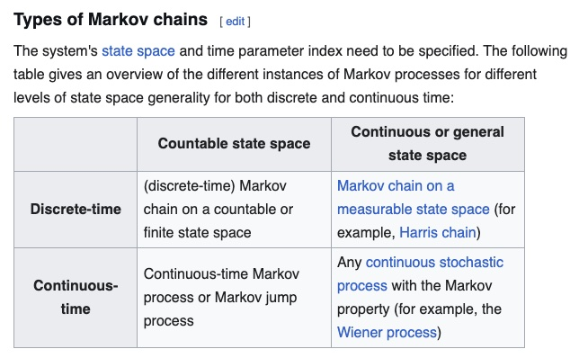
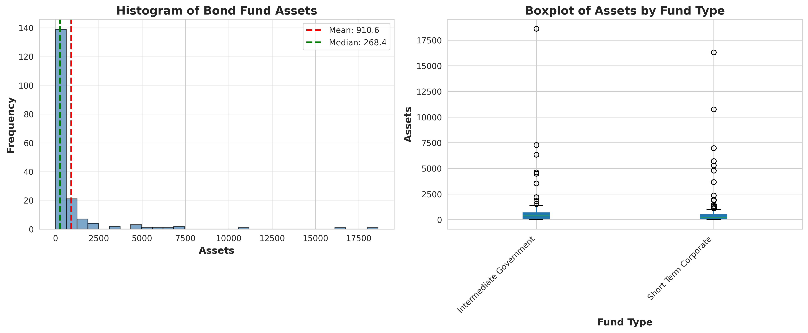
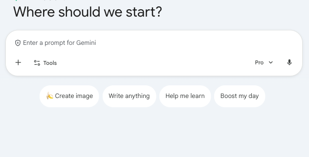

BUS 1301
About
BUS1301-SP26
BUS1301-SP26
Syllabus
Slides
Write-ups
Categories
All
(28)
obertwwalker.github.io
Summary Remarks and AI Consciousness
A recap.
Apr 23, 2026
Robert W. Walker
AI sans LLM
Today, we explore the AI of the non-LLM form.
Apr 21, 2026
Robert W. Walker
AI and LLMs: Ethics
LLM’s are models.
Apr 16, 2026
Robert W. Walker
AI and LLMs: Simulation
LLM’s are models.
Apr 14, 2026
Robert W. Walker
AI and LLMs: Prompts
Introducing Project Glasswing: an urgent initiative to help secure the world’s most critical software.
It’s powered by our newest frontier model, Claude Mythos Preview…
Apr 9, 2026
Robert W. Walker
AI and LLMs: Parameters
Some Math Slides
Apr 2, 2026
Robert W. Walker
AI and LLMs: Models
LLM’s are models. Models have
parameters
, in many cases.
Mar 31, 2026
Robert W. Walker
Human Resource Management Analytics
HR applications are in order for the day.
Mar 19, 2026
Robert W. Walker
Operations, Finance and Accounting
Operations, accounting, and finance applications are in order for the day.
Mar 17, 2026
Robert W. Walker
Relationships
Today, we will spend extensive time revisiting the logic of hypothesis testing and apply it to relationships among two variables along with a backward looking exploration of…
Mar 12, 2026
Robert W. Walker
Hypothesis Testing and Relationships
Today, we will spend extensive time revisiting the logic of hypothesis testing and apply it to relationships among two variables along with a backward looking exploration of…
Mar 10, 2026
Robert W. Walker
Inference and Sampling
Today, we examine inferential statistical techniques for quantitative data focusing on dependent sampling.
Mar 5, 2026
Robert W. Walker
Inference
Today, we examine inferential statistical techniques for quantitative data.
Mar 3, 2026
Robert W. Walker
Inference
Today, we examine inferential statistical techniques.
Feb 26, 2026
Robert W. Walker
Probability and Inference
Today, we continue probability distributions and begin inferential statistical techniques.
Feb 24, 2026
Robert W. Walker
Probability Distributions
Today, we continue probability distributions.
Feb 19, 2026
Robert W. Walker
Probability Distributions
Today, we explore probability distributions.
Feb 17, 2026
Robert W. Walker

Probability and Tables, II
Today, we continue probability.
Feb 12, 2026
Robert W. Walker
Probability and Tables, I
Today, we begin a or perhaps the core topic: probability.
Feb 10, 2026
Robert W. Walker
Data Quality
Today, we conclude data sources and consider data quality.
Feb 5, 2026
Robert W. Walker
Where do Data Come From?
Today, we conclude data visualization and think about where data come from.
Feb 3, 2026
Robert W. Walker

Data Visualization
Today, we continue data visualization.
Jan 29, 2026
Robert W. Walker

Data Visualization
Today, we introduce data visualization.
Jan 27, 2026
Robert W. Walker
Data Storage
Today, we expand on file based systems to consider database management systems (DBMS).
Jan 22, 2026
Robert W. Walker
Types of Data
Today, we introduce and classify data as commonly stored in file based systems [spreadsheets]
Jan 20, 2026
Robert W. Walker
On Models
What is a model?
Jan 15, 2026
Robert W. Walker
A Syllabus and Models
What is a model?
Jan 13, 2026
Robert W. Walker
Welcome To BUS 1301: Managing with AI
obertwwalker.github.io
Jan 12, 2026
Robert W. Walker
No matching items